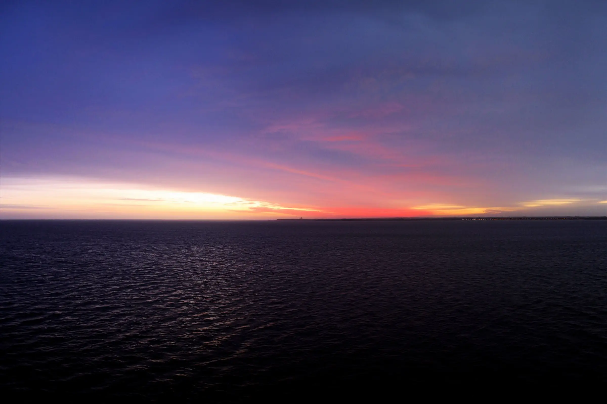
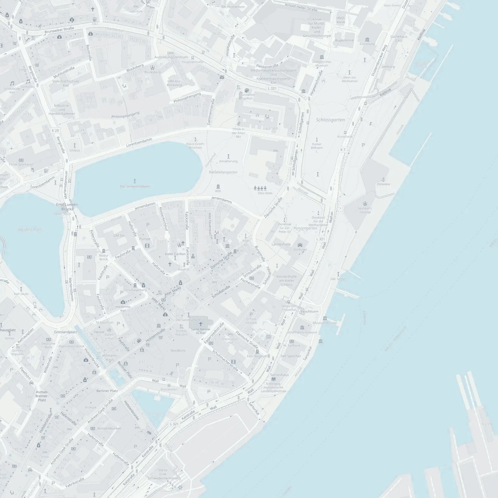

Neurochirurgie in Kiel · Schwerpunkt Wirbelsäule
Nur operieren, wenn es wirklich sein muss.
Gründliche Diagnostik, ehrliche Beratung, eine Operation erst, wenn sie unvermeidbar ist.

Dr. med. Christoph ManickeFacharzt für Neurochirurgie
- Nach VereinbarungTelefonisch oder über das Anfrageformular
- Burgstraße 2, Kiel4. Stock, mit Aufzug
- PrivatpraxisPrivat Versicherte und Selbstzahler
Meine Haltung
Eine Operation an der Wirbelsäule lässt sich nicht zurücknehmen. Prüfen Sie Ihre Bilder und Ihre Wege vorher in Ruhe.
Beratung
Wobei ich berate
Zum ganzen neurochirurgischen Fachgebiet, mit dem Schwerpunkt Wirbelsäule. Sie erfahren, welche Wege es gibt, ohne und mit Operation, und was jeweils dafür und dagegen spricht.
Zweitmeinung vor einer Operation
Ihnen wurde eine Operation an der Wirbelsäule empfohlen? Wir sehen uns Ihre Bilder und Befunde gemeinsam an, bevor Sie entscheiden.
Dazu anfragenBeschwerden nach einer Operation
Auch nach einem Eingriff ist eine Beratung möglich, etwa wenn Beschwerden geblieben oder neu aufgetreten sind.
Dazu anfragenBeratung bei Rückenbeschwerden
Wenn Rücken, Nacken oder Beine Beschwerden machen: eine ausführliche Einschätzung, woher sie kommen können und was helfen kann.
Dazu anfragenEine andere neurochirurgische Frage
Die Neurochirurgie ist dort gefragt, wo Nerven, Nervenwurzeln oder das Rückenmark bedrängt werden. Fragen Sie gern auch außerhalb der Wirbelsäule.
Dazu anfragenÜber mich
Fast wäre alles anders gekommen.
Als die Zusage fürs Medizinstudium kam, war mein kleiner VW-Bus schon gepackt, Richtung Italien. Und hätte es mit der Medizin nicht geklappt? Dann wäre ich heute wohl Tischler.
- Studium der HumanmedizinStatt nach Italien ging es in den Hörsaal.
- Facharzt für NeurochirurgieSchwerpunkt Wirbelsäule
- OberarztSt. Elisabeth-Krankenhaus Kiel
- BelegarztSt. Elisabeth-Krankenhaus und MVZ Lubinus, Kiel
- GemeinschaftspraxisNeurozentrum Kiel
- Heute: eigene PrivatpraxisBurgstraße 2, Kiel. Zweitmeinung zur Wirbelsäule
Praxis
Zeit für Ihre Fragen
Ausführlich
Wir nehmen uns die Zeit, die Ihre Fragen brauchen. Niemand drängt Sie zu einer Entscheidung.
Verständlich
Ich erkläre Ihre Bilder und Befunde so, dass Sie sie verstehen, und zeige Ihnen alle Wege, nicht nur den Eingriff.
Menschlich
Es geht um Sie und Ihren Alltag, nicht nur um Ihr MRT.

„Sie entscheiden. Ich gebe Ihnen die Orientierung dafür.“
Fragen
Häufige Fragen
Wer kann in die Sprechstunde kommen?
Die Praxis ist eine Privatpraxis für privat Versicherte und Selbstzahler. Gesetzlich Versicherte können als Selbstzahler kommen.
Wie bekomme ich einen Termin?
Schreiben Sie mir über das Anfrageformular. Ich melde mich persönlich bei Ihnen, und wir finden in Ruhe einen Termin.
Was kostet eine Zweitmeinung?
Abgerechnet wird nach der Gebührenordnung für Ärzte (GOÄ). Ob Ihre Versicherung die Kosten übernimmt, klären Sie am besten vorher mit ihr.
Was soll ich mitbringen?
Ihre aktuellen MRT- oder CT-Bilder auf CD oder als Link, Arztbriefe und Befunde, die schriftliche OP-Empfehlung, falls es eine gibt, und eine Liste Ihrer Medikamente.
Ich bin schon operiert. Kann ich trotzdem kommen?
Ja. Auch nach einer bereits durchgeführten Operation ist eine Beratung möglich, etwa wenn Beschwerden geblieben oder neu aufgetreten sind.
Was unterscheidet Neurochirurgie von Orthopädie?
Beide behandeln die Wirbelsäule. Die Neurochirurgie kommt vom Nervensystem her: Sie ist dort gefragt, wo Nervenwurzeln oder Rückenmark bedrängt werden.
Ist die Praxis barrierefrei erreichbar?
Die Praxis liegt im 4. Stock der Burgstraße 2 und ist mit einem Aufzug erreichbar.
Kontakt
Gespräch anfragen
Schreiben Sie mir kurz, worum es geht. Ich melde mich persönlich bei Ihnen, und wir finden in Ruhe einen Termin.
- Telefon
- 0172 634 77 06
- christoph.manicke@gmx.de
- Praxis
- Burgstraße 2, 4. Stock
24103 Kiel

So finden Sie mich
Burgstraße 2, 4. Stock24103 Kiel
In der Kieler Innenstadt, zwischen Altem Markt und Schloss. Mit dem Aufzug erreichbar.
Auf der Karte öffnen